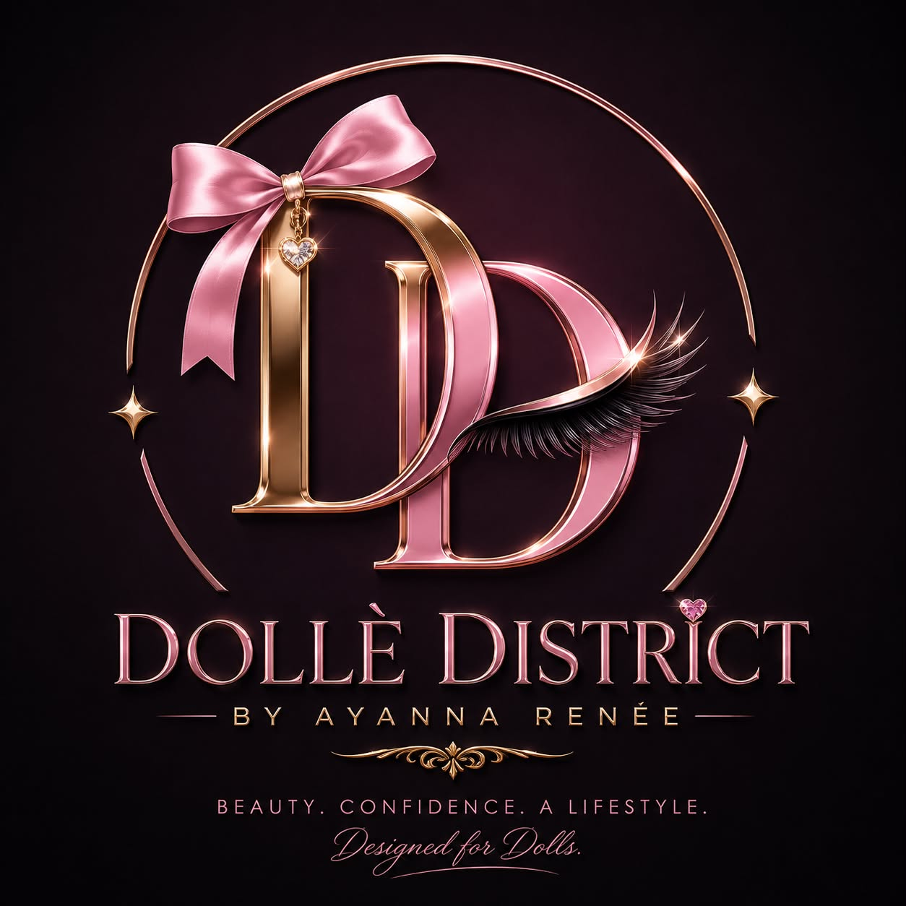

01
Doll Beauty
Pink, playful and feminine. Celebrity and MUA features, soft close-up eye shots and lifestyle imagery. More accessible glam than pure editorial.
An initial visual and creative exploration around the preparation, positioning and photo-shoot direction for the Dolle District lash brand.

A very good day to you.
Thank you for giving me the opportunity to think, observe and explore ideas around the launch of Dolle District and its lash collection.
Before going further, I would like to clarify that this report is not my final conclusion or a finished creative proposal. I see it more as the beginning of our observation, brainstorming, visualising and conceptualising process.
My intention with this first attempt is to put some early thoughts on the table so that we can start a conversation. I would very much welcome your suggestions, corrections, criticism, concerns and alternative ideas. From there, I can continue developing and improving the concepts.
The first challenge was not the photography. It was learning to see the lashes themselves.
Honestly, understanding lashes themselves has been one of the biggest challenges for me so far.
It took me around three days of observing and comparing different lash styles before I could begin to understand the differences between categories such as Doll, Angel and Siren.
Even now, I am still learning and trying to understand the details more deeply.
Continuous observation, studying existing brands and looking at how different lash styles are presented should gradually build a stronger understanding of the product.
For me, this is not only about creating attractive photographs. It is also about understanding what each lash represents, what emotion it creates, who it is designed for, and how that feeling can be communicated visually.
Ten established lash and beauty brands were selected as an initial reference group — not to copy, but to understand what works and where Dolle District can develop its own identity.
Short-form video appears prominently in promotional communication and social-media-led brand presentation.
For still photography, there is also a strong tendency toward close facial portraits, eye-focused photography, and framing around the face or above the neck.
This makes sense because the lashes themselves need to remain visually important. The photograph should communicate the overall beauty of the person while still allowing the viewer to notice the lash design.
Pink, playful and feminine. Celebrity and MUA features, soft close-up eye shots and lifestyle imagery. More accessible glam than pure editorial.
Polished and inclusive, with eye-shape guidance, clear product storytelling, soft studio lighting and editorial model close-ups.
High-glam, celebrity-driven and polished, with dramatic model shots and strong red-carpet energy.
Effortless luxury positioning with soft, clean, modern photography and a polished, refined feel.
Mass-market and practical, with tutorial-heavy content, clean product shots and real-user application videos.
Heritage UK brand balancing fun, trendy and classic aesthetics with lifestyle imagery and tutorials.
Strong DIY education and social virality, especially around under-lash technique and real-girl application.
Premium DIY lash-extension system combining education, community building and high-end product/lifestyle presentation.
Professional, artistic and high-fashion. Lashes are generally secondary to complete makeup looks.
Japanese doll-eye and kawaii aesthetic, cute and playful with a strong big-eye focus.
The central direction I see is feminine, luxurious, polished and editorial — with the Doll concept expressed in a mature way.
Feminine + luxurious + polished + editorial + Doll-inspired (without being childish).
Ardell, KISS/Falscara, Eylure are more mass-market and tutorial focused. Dolly Wink may be too cute/kawaii. MAC is highly polished but lashes are not the main hero.
These are early creative attempts, supported by preliminary illustration images. If a direction feels promising, it can be developed into a more detailed production plan.


Calm, expensive and editorial — modern luxury with quiet confidence.

Soft, intimate and luxurious — a private moment of getting ready.

Clean, pure, gentle and ethereal — light, calm and elevated.

Calm, intelligent and editorial — beauty with confidence and refinement.
If the main audience is in Europe, the United States or other Western markets, cultural familiarity should be part of the naming conversation.
I believe the people the product is prepared for should be approached through language, cultural references, lifestyle values and emotional cues that feel natural to them.
One early thought was celebrity-inspired naming. However, this needs to be handled carefully. Using a real celebrity's name commercially can create trademark, publicity-rights, endorsement or licensing concerns. Without proper permission or collaboration, it would be safer to create names that feel glamorous and celebrity-inspired without directly using a real person's name.
This is an area I would like to research further and develop with your suggestions.
Continue studying Doll, Angel and Siren styles and understand how each should communicate its own personality.
Define what makes Dolle District by Ayanna Renee distinctive from existing lash brands.
Turn the four preliminary concepts into detailed shot plans covering poses, angles, lighting and hero images.
Explore colour, lighting, wardrobe, makeup, hair, props, locations, camera angles, close-up styles and video movement.
Miss Ayanna, I would like to emphasise once again that this report is only my first attempt. I am still learning about the lash product, the different styles, the beauty market and how established brands communicate visually.
Some observations may be incomplete. Some concepts may need significant changes. Some ideas may not work at all — and that is exactly why I wanted to put them together at this stage.
My hope is that this first report can give us something concrete to discuss. If a direction is interesting, I can develop it. If something is weak, I can rethink it. If something is missing, I can research it.
From there, we can gradually shape a stronger and more distinctive visual direction for Dolle District by Ayanna Renee.